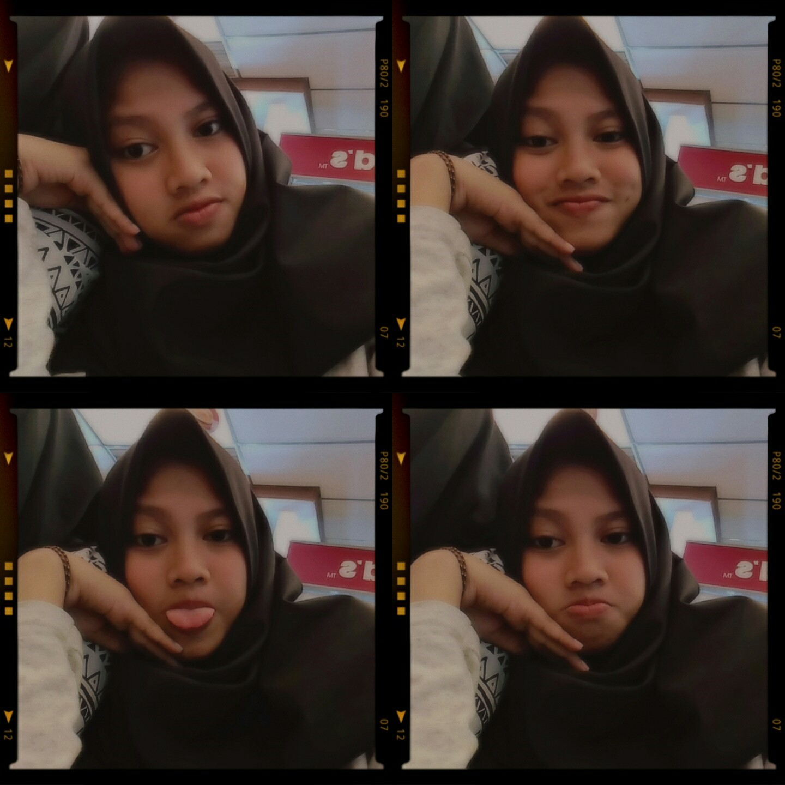
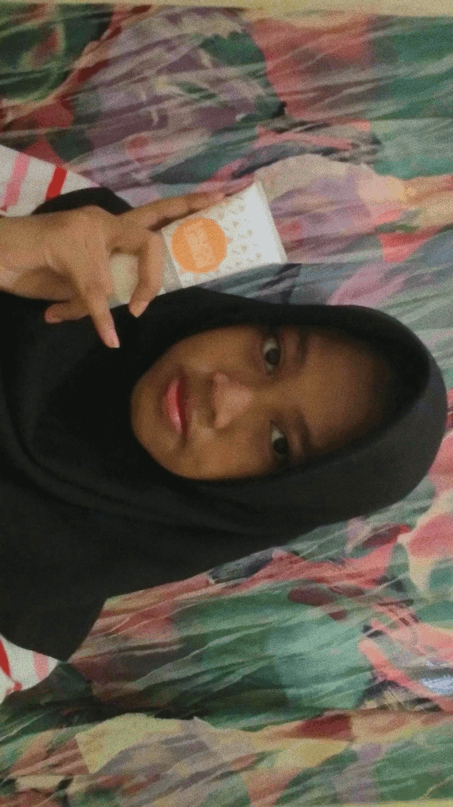
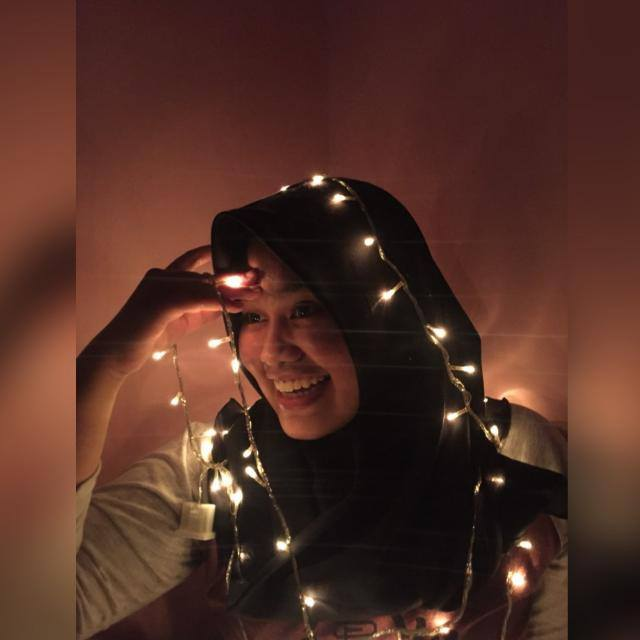
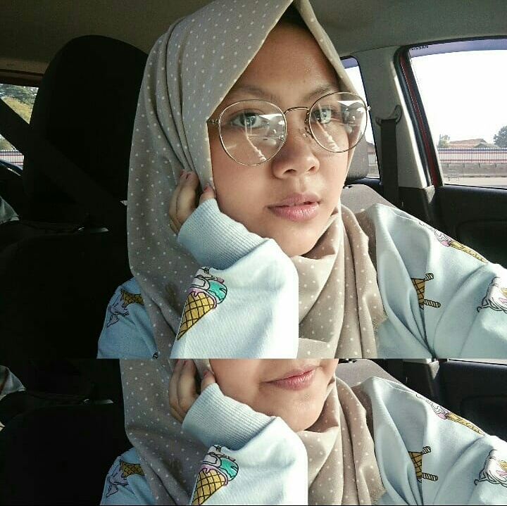

ABOUT ME
Assalamu'alaikum Wr. Wb.
Kata orang "Tak kenal maka tak sayang, tak sayang maka tak cinta" Hiyahiyahiya. Ampe bosen kali yaa kalo mau perkenalkan pasti ngomong nya begitu bae. Tapi udah kenal ga sayang sayang (duh). Jadi kali ini aku mau kenalin diri dulu nih. Check it out langsung biodata di bawah ini, guys!
Biodata
| Nama lengkap : | Az Zahra Putri Riupassa |
| Nama panggilan: | Jara, Zahra, DJ (panggilan khusus dari my sistah n my parents) |
| TTL: | Depok, 19 Mei 2002 |
| Jenis kelamin: | Perempuan |
| Agama: | Islam |
| Alamat: | Jl. Kemiri Jaya II RT 03/01 Beji Depok |

HOBBIES
Ngomongin tentang hobi, actually hobi aku tuh banyak dan juga suka ganti-ganti. Honestly karena aku orangnya bosenan hehhe. Waktu kecil aku hobi yang namanya baca buku kayak orang-orang. Tapi sekarang niat buka buku aja susah pisan, kecuali baca komik. Baca novel juga aku males banget gitu. Udah weh baca sinopsisnya doang. Jadi, sekarang hobi yang suka aku lakukan itu olahraga sama main kali ya. Main sama temen maksudnya, jalan-jalan, nongksy-nongsky.
CREATION
Tugas sekolah di SMK SMAK Bogor sangat beragam. Ya salah satunya seperti penampakan di bawah ini. Dari penampakan dibawah ini aku membuat gif seperti sedang mempromosikan salah satu produk emina yaitu Face Wash Double Bubble. Tugas ini dibuat untuk memenuhi tugas KKPI :))
IDOL
Tidak ada yang tidak tahu aktor dibawah ini. Yapss, benar sekali ini adalah Lee Min Ho. Selain tampan rupanya, dia juga jago sekali berakting yang membuat kaum hawa bahkan adam pun bisa klepek-kelepek. Hehehehe. Ini foto ketika kami bermain dalam satu drama korea bersama:p
 (1).png)
FRIENDS
Jadi kali ini aku akan sedikt bercerita. Seperti yang aku katakan sebelumnya, aku bersekolah di SMK SMAK Bogor. Dan sekarang aku duduk di kelas 11. Pada awalnya aku di tempatkan di kelas 11-4. Yang mana Ibu Sumiyati atau biasa disapa Bu Etty sebagai wali kelas kami. Kelasku ini diketuai oleh Dwiky, ia ketua kelas yang tegas dan baik. Ini adalah foto bersama kitah pertama kalii.

Di kelas ini aku punya teman dekat yang sangadhh aku sayangii mwachh. Yak mereka lah people-people dibawah ini. Foto ini diambil when wisuda angkatan 60. Ketika itu aku dan Hilma menampilkan tatra. Tatra is mean tari tradisional. Rahel menampilkan teater bersama anak teater lainnya. Kalo Muti, kakaknya angkatan 60, ia dateng make kebaya juga hhehe. Nahh kalo si Awa dia dateng as penonton wkwkkwk. LOL sorry.

Jadi kali aku bakal intro singkat about them
Hilma Nazhifah Naisania
Mutiara Aprilia Suvitri
Ibu dari semua ibu wkwkwk. Why I say that? Coz' dia itu sangadhh keibuan hehhe (dalam hal positif kok). Besdey nya beda sehari doang sama Hilma. 28 April 2002. Manusia retjeh se-world
Najwa Putri Nayanda
Si awaa dia stay with me di kelas PSG h3h3. Paling muda diantara kita. Pas tanggal 29 Oktober 2002 brojolnya. Pake kacamata, kurus par parr:(
Rahel Azzahra Hadikoesuma
Jadii anak ini tuh yaa bawel pisan. Udah mah bawel cepreng tea ning. Ultahnya beda se day sama akoeh. Yaps 20 Mei 2002. Biasa dipanggil bocil:v
But, di semester 2 ini aku pindah kelas. Ke kelas yang kini sedang hangat dibicarakan. PSG. PSG is mean Pendidikan Sistem Ganda, yang mana kelas ini akan melakukan PKL di kelas 11. Kuakui kelas ini berisikan orang-orang bertekad juga cerdas. Cukup seru, tapi masih kalah seru dengan kelas ku yang lama. But, I will try to love this class. Wali kelasku pun juga ganti yaitu Bu Cici, wanita muda yang baik hati dan cantik. Walaupun sudah pindah kelas, aku masih suka bergabung dengan teman-temanku 11-4. Berikut ini foto bersama pertama kami di kelas PSG hehhe.

Semangat gaes PKL nyaa <3
SCHOOL
This is my school, SMK SMAK Bogor. Sekolah dengan bau bau pereaksi kimia wkwkwk. Sekolah yang terletak di Jl. Binamarga I, Ciheuleut, Baranangsiang, Bogor Timur, Kota Bogor 16143. Sekolah Menegah Kejuruan yang berada di bawah Kementerian Perindustrian bukan Kementerian Pendidikan (anti mainstream deuh emang).
CONTACT
You can contact me at:
Phone: +62858 4006 4935
Email: azzahrariupassa@gmail.com / azzahraput@smakbo.sch.id